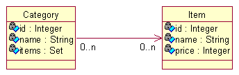
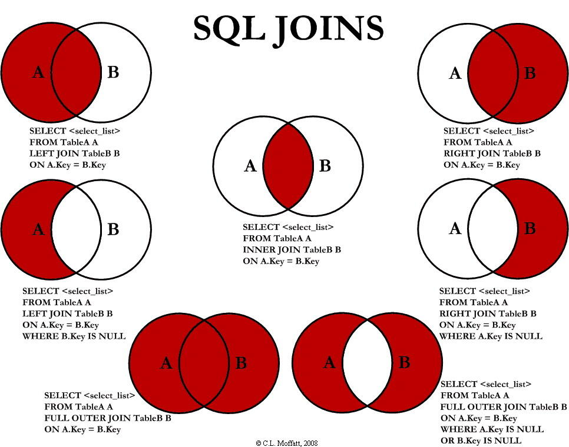

多对多关系毋庸置疑需要中间表的参与，关键在于，中间表是怎么配置产生的，多对多同时有双向和单项之分。下面通过商品的item以及分类category为例阐述多对多关系的映射以及复习数据库内、外连接,左、右连接的区别与联系。

单向多对多
多对多关系必须要有中间的关联表，首先明确中间的关联表并不对应Java的一个新的类，而是配置生成。配置文件如下
1 | <class name="Categories" table="categories" schema="hibernate"> |
可见，一个Set就将中间表的关系描述的很清楚了，首先定义了参照哪张表查（categories_items）,用这张表的哪个字段查(C_ID)，Set集合的获取对象的主键从哪个字段获取（I_ID）。
下面是一些执行代码
1 | Session session = sessionFactory.openSession(); |
查询依然有我们熟悉的懒加载。
需要注意的是，对具有Set一端查询的时候适用了内连接（inner join）
双向多对多
关于双向多对多只需要注意一下几点即可
- 在双向 n-n 关联的两边都需指定连接表的表名及外键列的列名. 两个集合元素 set 的 table 元素的值必须指定，而且必须相同。set元素的两个子元素：key 和 many-to-many 都必须指定 column 属性，其中，key 和 many-to-many 分别指定本持久化类和关联类在连接表中的外键列名，因此两边的 key 与 many-to-many 的column属性交叉相同。
- 对于双向 n-n 关联, 必须把其中一端的 inverse 设置为 true, 否则两端都维护关联关系可能会造成主键冲突
内连接、左外连接、右外连接、交叉连接
left join(左联接) 返回包括左表中的所有记录和右表中联结字段相等的记录
right join(右联接) 返回包括右表中的所有记录和左表中联结字段相等的记录
inner join(等值连接) 只返回两个表中联结字段相等的行交叉连接，这个没有具体参照，只要列出全部的关系，也就是笛卡尔积
有一张图诠释的很好：
